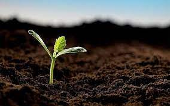

Đất hay thổ nhưỡng là lớp ngoài cùng của thạch quyển. Đất bị biến đổi tự nhiên dưới tác động tổng hợp của các nhân tố khác trong môi trường đó là nước, không khí, sinh vật.Đất là 1 bộ phận quan trọng trong hệ sinh thái.Môi trường đất đóng vai trò quan trọng trong đời sống của chúng ta. Đây là môi trường nuôi dưỡng các loại cây sinh vật,… trong đó có conn người. Đất còn là không gian thích hợp để con người xây dựng nhà ở và các công trình khác.

Hình ảnh minh họa môi trường đất
2. Ô Nhiễm môi trường đất
Ô nhiễm môi trường đất là khái niệm chỉ sự thay đổi tính chất của đất theo chiều hướng xấu đi, là sự sự suy thoái đất. Các hoá chất độc hại từ các hoạt động trong công nghiệp, quá trình sản xuất nông nghiệp bị xả thải ra mà không được xử lý đúng cách khiến tài nguyên đất bị nhiễm bẩn, suy thoái, gây hại cho đời sống của con người, động vật, cùng với đó, nó còn có thể kéo theo nhiều hệ luỵ khôn lường.
3. Nguyên nhân gây ra ô nhiễm môi trường đất
Có rất nhiều nguyên nhân gây ra hiện tượng ô nhiễm môi trường đất, trong đó, người ta chia chúng thành hai nhóm chính là nguyên nhân tự nhiên và nguyên nhân nhân tạo:
a) Nguyên nhân tự nhiên
Sự gia tăng hàm lượng các chất tự nhiên trong đất cùng việc có thêm nhiều chất độc lạ, vượt quá tiêu chuẩn cho phép cũng là nguyên nhân gây ra hiện tượng ô nhiễm môi trường đất, một số hiện tượng hình thành do nguyên nhân tự nhiên có thể kể đến là:
Đất nhiễm phèn : hiện tượng này xảy ra là do nước phèn từ một nơi khác theo mạch nước ngầm dưới lòng đất di chuyển, chủ yếu là đã bị nhiễm các chất sắt,… Khiến độ pH tự nhiên của môi trường giảm, gây ngộ độc cho cây, động vật sinh sống và phát triển ở trong môi trường đó.
Đất nhiễm mặn : nguyên nhân do lượng muối trong nước biển, nước triều dâng cao hay từ các mỏ muối dưới lòng đất. Nồng độ Na, K hoặc Cl cao làm tăng áp suất thẩm thấu và gây hạn sinh lý cho giới thực vật phát triển.
b) Nguyên nhân nhân tạo
Tro thanh và xỉ than : than được dùng để chạy nhà máy nhiệt điện, qua quá trình khai thác mỏ, sản xuất nhựa dẻo, hóa chất, nylon,… Chất thải công nghiệp này không được qua xử lí đã thải trực tiếp vào môi trường đất. Dần dần, chúng ngấm dần vào đất, gây ra hiện tượng ô nhiễm môi trường đất.
Đất nhiễm tro than và xỉ than có thể được nhận biết được bằng mắt thường. Khi đất bị nhiễm tro than hoặc xỉ sẽ xuất hiện các hạt màu trắng trong đất, chuyển sang màu xám và không đồng nhất. Đặc biệt hơn, đất có xỉ than sẽ có nhiều bọt và các hạt sỏi có lỗ hổng.
Thuốc trừ sâu, diệt cỏ : thuốc trừ sâu, diệt cỏ hiện nay thường xuyên được sử dụng trong các hoạt động nông nghiệp. Độc tính tiềm tàng trong hoá chất này có thể gây ra những ảnh hưởng tiêu cực tới môi trường, sinh vật và đặc biệt là con người.
Các ngành công nghiệp : hoạt động công nghiệp hiện nay đang phát sinh bụi, nước thải, rác… và nhiều nơi thậm chí thải các thứ này trực tiếp ra môi trường, khiến tình trạng ô nhiễm môi trường đất ngày một nghiêm trọng hơn. Ví dụ như bụi thải từ các nhà máy sản xuất xi măng, các cơ sở khai thác đá,…
Dầu : nếu đổ dầu và các chế phẩm từ dầu lên trên bề mặt đất cũng có thể gây ô nhiễm môi trường đất vì dầu ngăn không cho không khí vào đất, ngăn sự trao đổi năng lượng mặt trời của đất.
4. Hậu quả của hiện tượng ô nhiễm môi trường đất
Gây hại cho sức khoẻ của con người : một số nghiên cứu đã chứng minh rằng, hiện tượng ô nhiễm môi trường đất có liên quan đến hiện tượng chậm phát triển ở trẻ em, tăng nguy cơ dị tật bẩm sinh, rối loạn hô hấp, ung thư và các bệnh ngoài da.
Đất bị thoái hoá, xuống cấp trầm trọng : hiện tượng ô nhiễm môi trường đất làm cấu tạo đất thay đổi, dễ bị các loại nấm gây hại và cũng dễ xói mòn hơn khi gặp mưa lớn, nếu nghiêm trọng hơn, đất có thể bị mất khả năng khai thác.
Ảnh hưởng đến các hoạt động sản xuất nông nghiệp : đất bị ô nhiễm sẽ khiến cho mùa màng bị thất bát, cây trồng thiếu dinh dưỡng nên sẽ chậm phát triển, chất lượng sản phẩm cũng giảm sút, gây hại không ít cho nông dân.
5. Biện pháp khắc phục hiện tượng ô nhiêm môi trường đất
Giảm lượng rác thải ra môi trường : Rác thải luôn là nguyên nhân gây ra tất cả các loại ô nhiễm, kể cả ô nhiễm môi trường đất, vì thế, biện pháp cần làm lúc này chính là hạn chế xả thải rác sinh hoạt ra ngoài môi trường. Đặc biệt, các hành động xả thải các loại hoá chất chưa qua xử lý trực tiếp ra môi trường cũng cần được xử lý một cách nghiêm khắc để làm gương.
Tránh sử dụng hoá chất và thuốc trừ sâu trong canh tác : Thuốc trừ sâu gây hại cho cả thực phẩm, con người và môi trường nếu bị lạm dụng. Bộ Nông nghiệp khuyến khích nông dân nước ta nên sử dụng các phương pháp kiểm soát dịch hại sinh học, sử dụng các loại phân bón hữu cơ thay vì sử dụng thuốc trừ sâu. Việc sử dụng tất cả các phương pháp kiểm soát dịch hại từ tự nhiên sẽ làm giảm độc tính gây ra cho đất từ đó hạn chế phần nào tình trạng ô nhiễm môi trường đất.
Ngăn chặn nạn phá rừng : Rừng cây có vai trò thiết yếu trong việc hạn chế những biến đổi tiêu cực đối với môi trường. Để làm được điều đó, chúng ta cần ngăn chặn nạn phá rừng, khuyến khích mở rộng diện tích trồng cây tại các quốc gia, giảm thiểu việc sử dụng các sản phẩm giấy…
Tiết kiệm năng lượng : Quá trình đốt nhiên liệu hóa thạch để tạo năng lượng điện sẽ phát thải ni tơ vào không khí. Lượng khí ni tơ này sẽ đọng lại trên mặt đất, dẫn đến tình trạng ô nhiễm đất và nước. Để giảm lượng điện tiêu thụ, khi không dùng đến, bạn hãy tắt và rút phích cắm của các thiết bị như ti vi, máy in, máy tính bảng và máy vi tính…
Sử dụng các sản phẩm hữu cơ : Điều này sẽ tạo động lực cho nông dân từ bỏ dần việc sử dụng các hoá chất trong quá trình trồng trọt. Từ đó sẽ không còn việc hoá chất từ các loại thuốc trừ sâu, thuốc diệt cỏ bị dư thừa, ngấm xuống đất rồi gây ra hiện tượng ô nhiễm môi trường đất nữa.
Qua những thông tin từ bài viết trên đây, chúng tôi hy vọng đã cung cấp cho bạn thêm nhiều hiểu biết hơn về vấn đề ô nhiễm môi trường đất này. Chúng ta hãy cùng nhau đồng lòng để hạn chế, khắc phục tình trang ô nhiễm đang xảy ra ngày càng nghiêm trọng hơn hiện nay. Vì một môi trường xanh – sạch – đẹp cho bản thân, gia đình và cả các thế hệ tương lai.